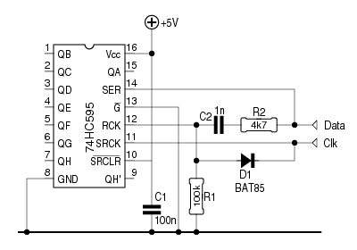

Als een μC over onvoldoende I/O-pinnen beschikt om het nodige
te sturen, wordt al snel naar een expansie-IC gegrepen.
De 74HC595 is een voorbeeld van betaalbaar, goed
verkrijgbaar IC dat hiervoor kan gebruikt worden. Met slechts 3
stuurlijnen kunnen 8 uitgangen naar wens hoog of laag gemaakt
worden.
Maar wat, als er geen 3 I/O pinnen beschikbaar zijn om de 74HC595 te sturen? Wel, met twee pinnen en 4 simpele componentjes kan het ook.

De werking is eenvoudig:
• Bij de start is Clk laag. Via D1 wordt ook de LATCH van
het IC (RCK) laag gehouden.
• Data wordt nu hoog of laag gemaakt.
• Er wordt een kleine pause ingelast, zodat C1 zich kan
ontladen in het geval Data hoog is.
• Clk wordt kortstondig hoog en terug laag gemaakt.
Dit wordt 7 maal herhaald. Het 8e bit pakken we iets anders
aan:
• nadat het bit klaargezet is, maken we Clk hoog, en
houden we hem hoog.
• In het geval Data hoog was, maken we die eerst laag.
• Nu maken we Data hoog. Dat resulteert in een korte
puls op RCK, waardoor de ingeklokte bits op de uitgangen van de
74HC595 verschijnen.
Dit is een brokje code, dat precies doet wat hierboven beschreven
wordt:
#define SPI_PORT PORTD
#define SPI_D _BV(PD2)
#define SPI_CLK _BV(PD3)
void spi_w(unsigned char data)
{
unsigned char cnt;
SPI_PORT = 0;
for (cnt = 0; cnt < 8; cnt++) { // 8 bits, MSB eerst
if ((data & 0x80) != 0) { // Bit 7 = hoog?
SPI_PORT |= SPI_D; // Dan D hoog
_delay_us(50); // Even wachten - C moet zijn lading kwijt
} else { // Anders
SPI_PORT &= ~(SPI_D); // D laag
}
_delay_us(10);
SPI_PORT |= SPI_CLK; // CLK hoog
if (cnt == 7) { // Was dit het laatste bit?
if ((data & 0x80) != 0) { // Als D hoog was,
SPI_PORT &= ~(SPI_D); // maken we die eerst laag
}
_delay_us(20);
SPI_PORT |= SPI_D; // Nu kan SPI_D de LATCH inklokken
_delay_us(20);
SPI_PORT &= ~(SPI_D); // Eerst D terug laag,
SPI_PORT &= ~(SPI_CLK); // en vervolgens CLK
return; // Dat was het dan...
}
_delay_us(10); // Korte pause
SPI_PORT &= ~(SPI_CLK); // CLK terug laag
_delay_us(10);
data *= 2; // data naar links opschuiven
}
}
Twee LED's sturen met één IO-pin, waarbij ofwel de ene
danwel de andere LED brandt, is een makkie. Plaats beide LED's,
elk met een stroombegrenzende weerstand, in serie tussen Vcc en
GND. De I/O-pin wordt op het knooppunt tussen beide LED's
aangesloten.
Is de pin laag, dan brandt de LED die met Vcc verbonden is. Is
de pin hoog, dan is het de andere LED die oplicht.
Met een duo-LED lukt dat niet, omdat die doorgaans over een
gemeenschappelijke kathode of een gemeenschappelijke anode
beschikken.
Maar met een transistor en een diode valt daar een mouw aan te
passen, zoals het plaatje hiernaast toont.
Als de transistor spert, krijgt de groene LED stroom - dat hoeft
geen verklaring.
Zodra de transistor gaat geleiden, is het de rode LED die stroom
krijgt. Maar hierdoor daalt de spanning over de groene LED,
waardoor deze dooft. D2 helpt daarbij een handje.